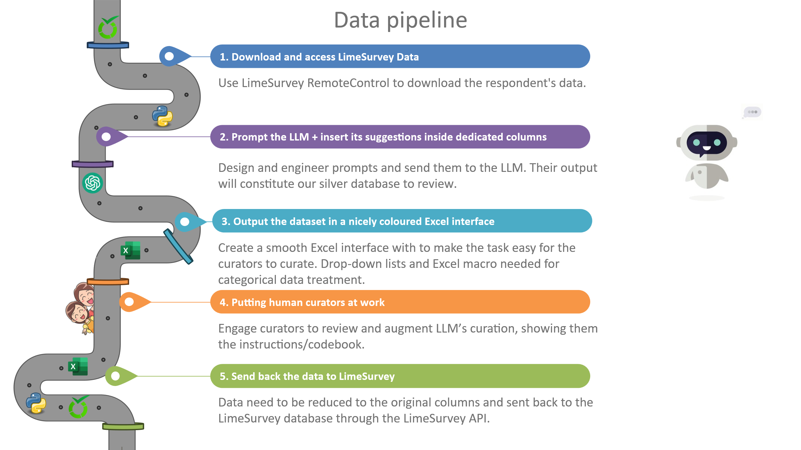
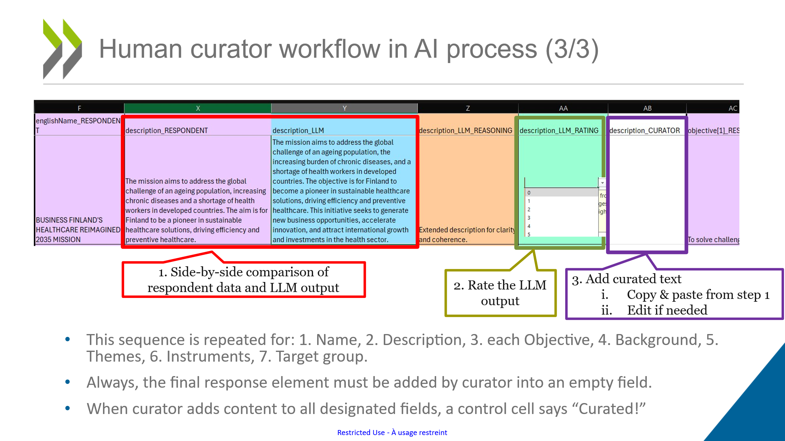
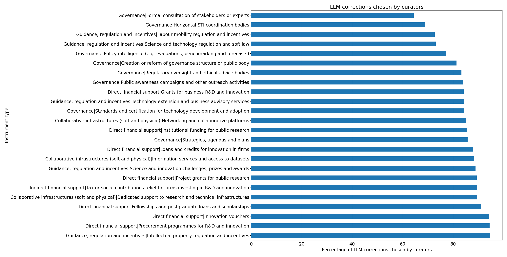
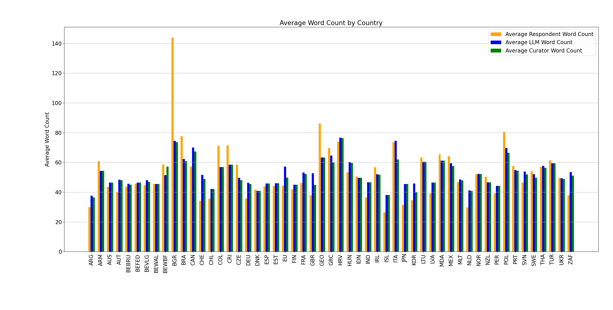

AI-Assisted Curation of Science, Technology and Innovation Policy Data:
Integrating Large Language Models into Expert-Driven Data Quality Processes
David Howoldt and Antoine Kryus (OECD)
1. Introduction
Limited availability of comprehensive and comparable data on the design and effects of science, technology and innovation (STI) policies and their mixes across countries remains a major challenge for policymakers and analysts. This limitation reflects both the costs of collecting such data and challenges related to the unit of analysis — as complex pieces of social technology, policies do not easily lend themselves to large-scale data collection on their design, implementation and impacts (Flanagan et al., 2011; Feldman et al., 2015). The EC-OECD STIP Compass, which currently has data on around 8,800 policy initiatives across 63 countries, is the most comprehensive attempt to address some of this gap. Its data feeds directly into the OECD’s STI Outlook and other cross-country analyses (OECD, 2025).
STIP Compass data is collected through the biennial EC-OECD STIP Survey, in which government officials describe their country’s policy initiatives using free-text fields (titles, descriptions, objectives, background) and categorical taxonomies (policy themes, instrument types, and target groups). This policymaker-sourced data is invaluable but inherently heterogeneous: respondents vary in writing style, language proficiency, level of detail, and interpretation of the taxonomies. Subsequently, a policy description may sound colloquial or elaborate and technical, while theme and instrument assignments may reflect differing understandings of categories rather than genuine differences in policy design. These inconsistencies limit comparability of policy initiatives across the dataset, and they are not specific to STI policy: any data collection in which respondents describe complex objects in their own words and then assign them to a shared taxonomy produces the same stylistic variation and classification drift.
This data story reports on the design, implementation, and initial results of an LLM-assisted curation process introduced for the 2025 STIP Survey cycle. It is linked to earlier experimental work exploring LLM-assisted data prefilling for the STIP Survey and extends it from data collection to data curation. The contribution speaks directly to a data infrastructure challenge in STI policy studies: how to maintain the quality and comparability of policy data at scale as the number of contributing countries grows, survey cycles accumulate, and the demand for cross-country analysis intensifies. The taxonomy and the prompts are specific to STIP Compass, but the workflow architecture is not: the layering of respondent input, model suggestions and curator arbitration is transferable to any curated survey dataset. We show that LLMs can be deployed in restructured curation workflows so that human expertise is concentrated on the cases where it matters most, while routine data harmonisation is accelerated.
2. The LLM-Enhanced Curation Process
2.1 The STIP Compass information system and its curation challenge
The STIP Compass infrastructure comprises three primary components: (1) a data collection system based on LimeSurvey, an open-source online survey tool, used to administer the EC-OECD STIP Survey and generate the project’s datasets; (2) a semantic database (MarkLogic) used to store and interlink survey data with other relevant datasets such as statistics and publication metadata; and (3) a web portal that allows users to visualise, browse, search, download, and interact with the data for policy research and analysis.
Until now, curation has been performed by human experts inside LimeSurvey immediately after the survey period closes. Curators work initiative-by-initiative in its interface, essentially editing as if they were survey respondents themselves. This process is thorough but labour-intensive and, across more than 2,000 new initiatives per survey cycle, difficult to apply with full consistency.
To integrate a new LLM-assisted curation approach with the existing infrastructure, data had to be extracted from LimeSurvey, processed externally with LLM support, and loaded back via an API, as LLM curation cannot be implemented directly within its two-decade-old codebase. While feasible through LimeSurvey’s RemoteControl API, this required considerable engineering effort to build a reliable end-to-end pipeline.
2.2 Conceptual model
The approach adapts a quality-flow model from industry data curation to the policy-data context (Qian et al., 2024). Respondent submissions constitute a ‘golden dataset’ — expert-provided but noisy. The LLM generates a parallel ‘silver dataset’ of suggested edits. Human curators then arbitrate between the two, producing a ‘super-golden dataset’ that combines respondents’ substantive knowledge, the LLM’s consistency, and curators’ quality judgement. This three-layer structure is a deliberate governance choice: the model never overwrites expert content autonomously.
Several technical safeguards constrain the LLM’s behaviour. Prompts are scope-restricted to use only the text in each initiative record and the official taxonomy codebook, with no access to external knowledge; decoding parameters are set conservatively (temperature = 0.3, top-p = 0.5) to minimise hallucination and stylistic drift. Three separate prompts partition the task — text harmonisation, categorical taxonomy validation, and initiative definition check — and the LLM’s reasoning is recorded alongside each suggestion, making the basis for every proposed edit transparent to the reviewing curator.
2.3 An end-to-end pipeline
A key design principle is that the pipeline illustrated in Figure 1 operates end-to-end: from data extraction through LLM processing, human review, and data return, the entire workflow is automated and reproducible. The five stages are: (1) data retrieval from LimeSurvey via API; (2) engineered prompts sent to the LLM in three task partitions; (3) results rendered into a colour-coded Excel review interface; (4) human curation with side-by-side comparison and rating; and (5) return of curated data to LimeSurvey via API.

2.4 The human curator’s interface and changed role
In the LLM-assisted workflow, curators work in a purpose-built colour-coded Excel workbook rather than in LimeSurvey, as Figure 2 illustrates Each row represents one policy initiative; columns are organised in pairs: the respondent’s original input alongside the LLM’s suggestion, colour-coded to make differences immediately visible. For free-text fields (title, description, objectives, background), curators see the original and proposed text side by side and can edit either. For categorical fields (themes, instruments, target groups), the LLM’s suggestion is accompanied by a written justification explaining why a category was added, removed, or retained. Drop-down lists constrained to the official taxonomy ensure that curators can only assign valid categories. For each field, curators provide a quality rating of the LLM suggestion, generating a structured feedback loop.
This design shifts the curator’s role from performing all corrections directly — from fixing typos to reassessing taxonomy assignments — towards verification, arbitration, and quality assurance. Curators no longer draft improved descriptions from scratch; instead, they evaluate whether the LLM’s reformulation preserves meaning while improving clarity. For taxonomies, they assess whether suggested additions or removals are grounded in the initiative text. This concentrates expert attention on genuinely judgement-intensive cases: ambiguous descriptions, country-specific institutional nuances, and borderline taxonomy assignments. Table 1 summarises this comparison.
| Dimension | Traditional process | LLM-assisted process |
|---|---|---|
| Interface | LimeSurvey (survey tool) | Colour-coded Excel with parallel respondent/LLM columns, drop-downs, and rating fields |
| Core task | Perform all corrections directly: typos, style, clarity, taxonomy, initiative check | Review LLM suggestion and original side-by-side; correct or improve; rate LLM output quality |
| Expert focus | Spread across routine and substantive edits | Concentrated on judgement-intensive cases: ambiguous descriptions, country-specific nuances, borderline taxonomies |
| Audit trail | Limited: changes recorded in LimeSurvey | Structured: LLM reasoning, curator ratings, and version history per field |
| Residual friction | Time-intensive for large volumes | Rating load (~7 ratings per initiative, ~15k total); split interface (Excel + LimeSurvey for instrument design facets) |

3. Results
3.1 Illustrative examples of LLM curation
Table 2 presents selected examples of LLM curation suggestions across different task types, illustrating the range of edits the model produces — from surface-level normalisation to substantive taxonomy reassignment — and the reasoning it provides.
| Data aspect curated | Before (respondent) | After (LLM suggestion) | Interpretation |
|---|---|---|---|
| Title normalisation | STARTUP PERU | Start-Up Peru | Corrected capitalisation; improved readability and searchability |
| Description extension | Granting of aid for the implementation of R&D projects related to the functions and powers of the organisation | This initiative provides financial aid for the implementation of R&D projects related to the functions and powers of the Nuclear Safety Council. It aims to promote specific lines of R&D deemed important in the field of nuclear safety. | Extended for clarity and detail using only the provided context |
| Language clarification | To find out high school students with outstanding incentive and ability and provide practical lecture and research practice to selected students. | The Global Science Campus aims to identify high school students with exceptional motivation and ability, providing them with practical lectures and research practice. Additionally, it fosters internationality and professionalism among the selected students. | Clarifications (red), formalism (green), and precision (blue) applied to vague wording |
| Non-initiative detection | European Night of Researchers (SVN): EU-supported public event | Is initiative? No. One-off event, not a continuous public action modifying behaviours in the national innovation system. | Protects database integrity by filtering entries that do not meet initiative definition |
3.2 Alignment between LLM suggestions and human curators
We assess alignment using two complementary metrics.
- Cosine similarity is appropriate for comparing free-text fields where meaning and phrasing matter.
- Dice similarity is appropriate for comparing categorical assignments (instruments, themes, target groups), where overlap in discrete label sets is the relevant quantity.
For free-text fields, alignment is very high: cosine similarity between LLM and curator text outputs averages 0.98, indicating that curators overwhelmingly adopt the LLM’s suggestions. The respondent-to-curator similarity of 0.72 (the same as respondent-to-LLM) confirms that the LLM’s edits enhance clarity and consistency without introducing large semantic shifts.
For categorical assignments, alignment remains high but is lower, reflecting the more substantive judgement involved. Figure 4 shows that curator acceptance of LLM instrument corrections varies by instrument type: acceptance is lowest for ‘Formal consultation of stakeholders or experts’ (~65%) and highest for types such as ‘Intellectual property regulation and incentives’ and ‘Procurement programmes for R&D and innovation’ (~95%). Cross-country variation is more pronounced for categorical fields, potentially reflecting differences in institutional context, taxonomy interpretation, or the effects of evolving prompt versions during the curation period.

3.3 Corpus-level effects: harmonisation without homogenisation
Comparing the full corpus before and after curation (respondent input versus final human-reviewed output) reveals a pattern we characterise as harmonisation without homogenisation. As Figure 5 shows, mean description length remains stable across the three stages — respondent, LLM, and curator averages all fall between 51 and 53 words — but the cross-country standard deviation drops substantially, from approximately 19 words (respondents) to 9 words (LLM and curators). This indicates that the LLM compresses outliers — both excessively terse and excessively long entries — towards a consistent length, and curators largely retain this normalisation.
Lexical analysis using Brown corpus word frequencies shows a similar pattern: the LLM introduces slightly more precise and formal vocabulary, and the cross-country dispersion in lexical profile narrows (standard deviation from ~6 to ~4). For instrument assignments, the average number of instruments per initiative increases slightly from the LLM (+0.2), while cross-country dispersion decreases modestly (SD from ~0.5 to ~0.4). Taken together, these findings suggest that the LLM-assisted process contributes to a more comparable dataset without mechanically flattening substantive cross-country differences in policy design.

4. Discussion and Outlook
The results provide cautious support for integrating LLMs into expert-driven STI policy data curation and beyond. The end-to-end pipeline is most effective for routine text harmonisation, where it accelerates curation while preserving meaning. For taxonomy assignments, LLM suggestions are a useful starting point but require — and receive — substantive human arbitration, particularly for terse descriptions or country-specific policy configurations.
The current technical setup carries inherent constraints. Combining a general-purpose LLM with LimeSurvey — a survey platform whose codebase spans two decades — requires a data round-trip via API that adds engineering complexity. This architecture should be understood as transitional: if the STIP Compass migrates to a more modern survey infrastructure in the future, LLM-assisted curation could be embedded more directly into the data collection and review workflow, substantially reducing the effort required.
One promising direction is to complement prompt-based suggestions with embedding-assisted taxonomy matching. Rather than asking the LLM to infer appropriate themes or instruments from a single initiative’s text within a context window, this approach computes vector representations (using sentence transformers) for both taxonomy items and initiative texts, then measures semantic distance to produce ranked candidate categories.
A further extension would integrate LLM feedback directly into the survey response process. Rather than curating ex post, the system could provide real-time suggestions to respondents as they complete the survey, helping them provide more harmonised and taxonomy-consistent information from the outset. This would shift the LLM’s role from downstream data cleaning to upstream quality assurance.
A fundamental limitation is that the LLM as currently deployed only curates user-provided data. It harmonises text and validates taxonomy assignments, but it does not independently assess whether the reported information is accurate in the first place. The reliability of the underlying policy descriptions remains entirely dependent on human expertise. This is one of the reasons why human curators remain essential to the process, but it also raises a concern. Research on automation bias suggests that repeated reliance on AI suggestions can lead to ‘automation complacency’, where users become less vigilant and may overlook errors that the AI has not flagged (Passi and Vorvoreanu, 2022). If curators come to trust LLM suggestions as a default, their critical engagement with the underlying content could diminish over time. Monitoring curator behaviour and maintaining diverse review practices will be important safeguards as the approach matures. Future extensions of the tool could also begin to address the reliability gap directly, for instance by cross-checking respondent-provided information against publicly available sources.
Keywords: artificial intelligence, science technology and innovation policy, data curation, large language models, STIP Compass, data quality
References
Feldman, M.P., Kenney, M. and Lissoni, F. (2015). ‘The new data frontier’. Research Policy, 44(9), pp. 1629–1632. https://doi.org/10.1016/j.respol.2015.02.007
Flanagan, K., Uyarra, E. and Laranja, M. (2011). ‘Reconceptualising the “policy mix” for innovation’. Research Policy, 40(5), pp. 702–713. https://doi.org/10.1016/j.respol.2011.02.005
OECD (2025). OECD Science, Technology and Innovation Outlook 2025. Paris: OECD Publishing. https://doi.org/10.1787/5fe57b90-en
Passi, S. and Vorvoreanu, M. (2022). ‘Overreliance on AI: Literature review’. Microsoft Research Technical Report.
Qian, C. et al. (2024). ‘The evolution of LLM adoption in industry data curation practices’. arXiv preprint 2412.16089. https://arxiv.org/abs/2412.16089
Shumailov, I. et al. (2024). ‘AI models collapse when trained on recursively generated data’. Nature, 631(8022), pp. 755–759. https://doi.org/10.1038/s41586-024-07566-y